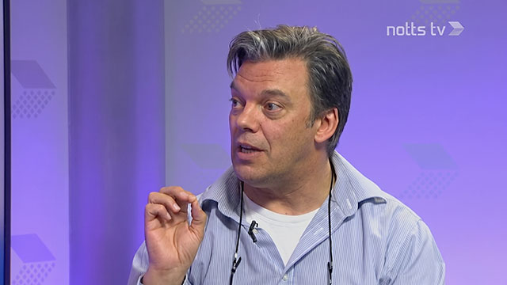
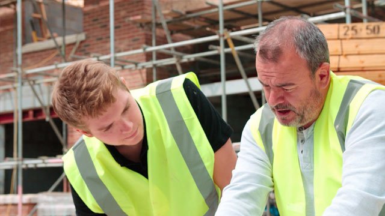

Cat Selfie King. A live interview on NottsTV 6:30 Show takes an unexpected turn. (2014)
Play

Civilisations Stories, The Art of Mining. BBC (2018). Features Paul Fillingham and David Amos on location at Pleasley Pit Museum.

The Space on-demand arts platform, Sillitoe Trail, Inside Out. BBC (2013). Features Paul Fillingham, James Walker and the Alan Sillitoe Committee.

Cat Selfie King. A live interview on NottsTV 6:30 Show takes an unexpected turn. (2014)

'Houdini Window' Seaside Sci-Fi by Paul Fillingham. Opening credits edited in Adobe Premiere with archive, stock video and iPhone footage. (2025)

'Houdini Window' Experimental generative AI character demo edited in Adobe Premiere with additional archive, stock video and iPhone footage. (2025)

Mulletproof Poet Andrew Graves recites his poem YouTube Youth for The Space Arts, Sillitoe Trail, Basford Nottingham. (2013)

A History of Coal Mining in 10 Objects: Snap Tin. Fillingham and Amos, AHRC collaboration, University of Nottingham (2013).

A History of Coal Mining in 10 Objects: Headstocks. Fillingham and Amos, AHRC collaboration, University of Nottingham (2013).

Supporting Hanover Consulting, AI User Centred Design seminar, London (2024).

HMRC Secure Data Exchange Service, explainer video. Animation, voiceover and post-production (2019).

Constructionline Digital Platform Launch. Animation, voiceover and post-production (2016).